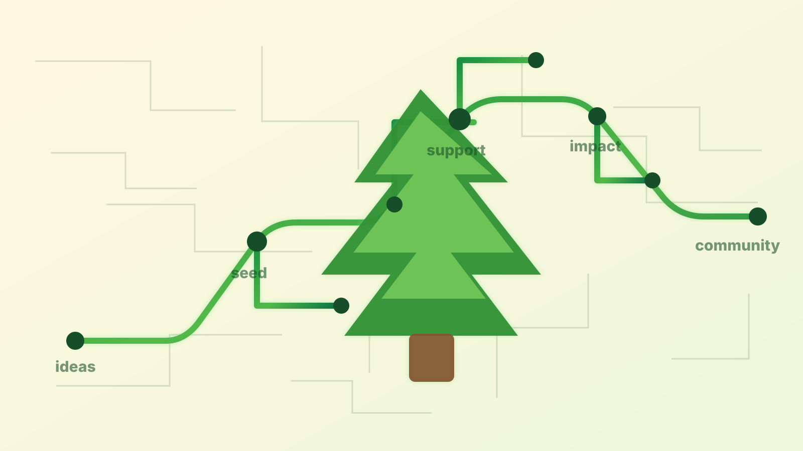

ToorCamp 2026 • Prime Dome
How modest grants close the circuit between hackers, resources, and public-good research.
Dean Pierce
For more: pdxhf.org
“The people with the time don't have the money, and the people with the money don't have the time.” The Hackerspace Paradox
Offensive security researcher, Portland hacker, and founder of the Portland Hacker Foundation.
Portland Hacker Foundation
PDXHF is a 501(c)(3) helping Portland hackers turn sharp ideas into security research, education, and community infrastructure.
Anyone can plug in
The point is a community circuit, not one heroic role.
Planting the seed
The intimidating part
Serious, yes. More achievable than expected, also yes.
The first bet
From sensor to SnitchPuck
The check mattered. The technical and community support mattered just as much.

target + trust + technical helpAsymmetric impact
The ecosystem around the check
PDXHF public shape
Public reference checked at pdxhf.org.
Build your own circuit
You need enough structure to be trusted, then enough momentum to make the first useful connection.
Choose where you plug in
“There is probably already a great idea in your community waiting for someone to close the circuit.” pdxhf.org